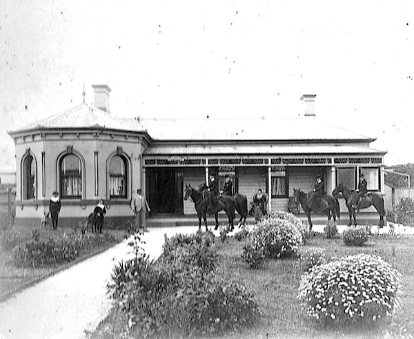
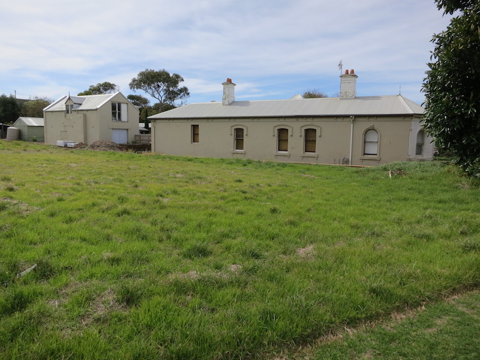
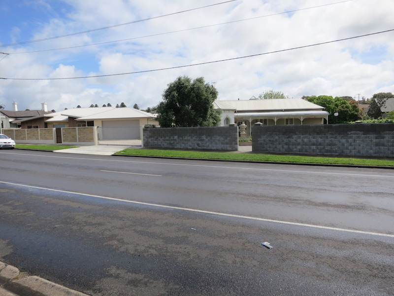
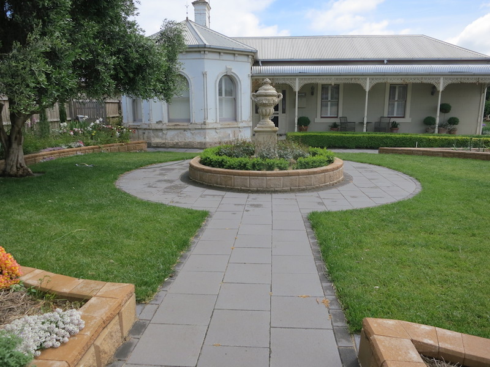
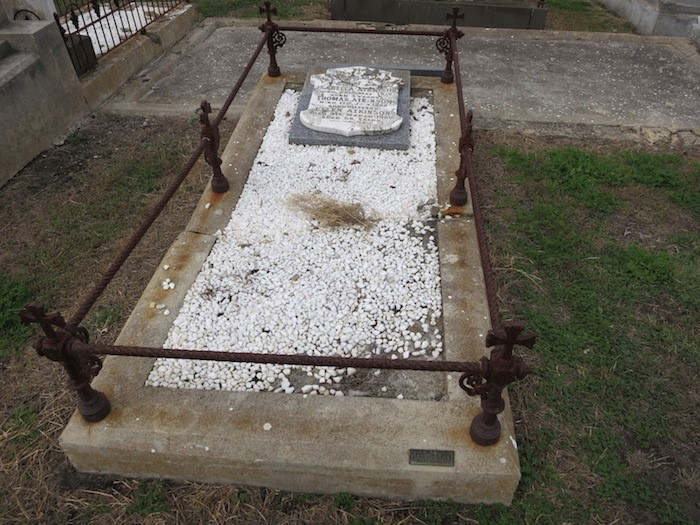
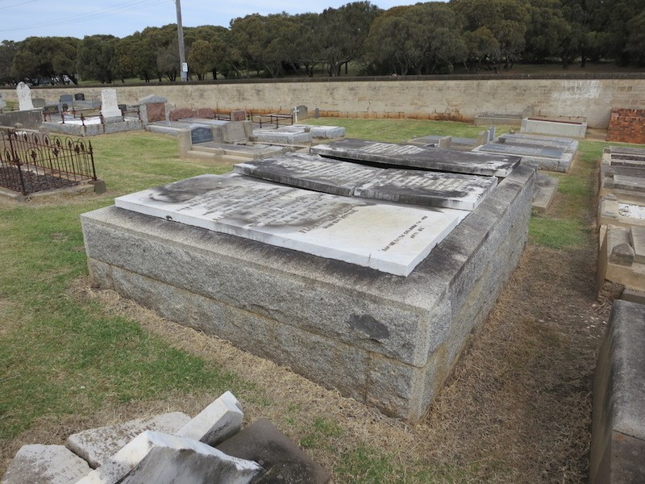
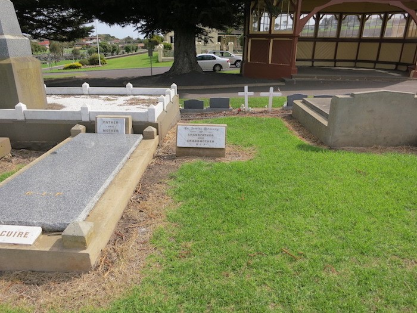
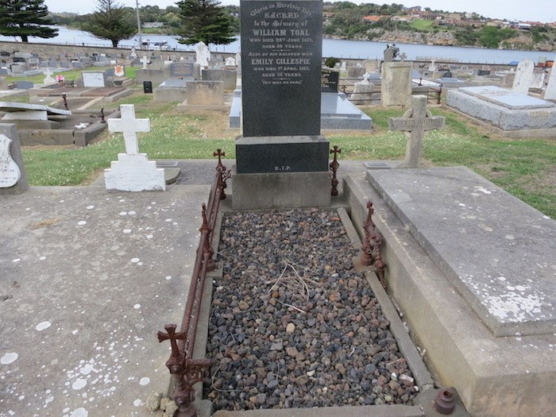
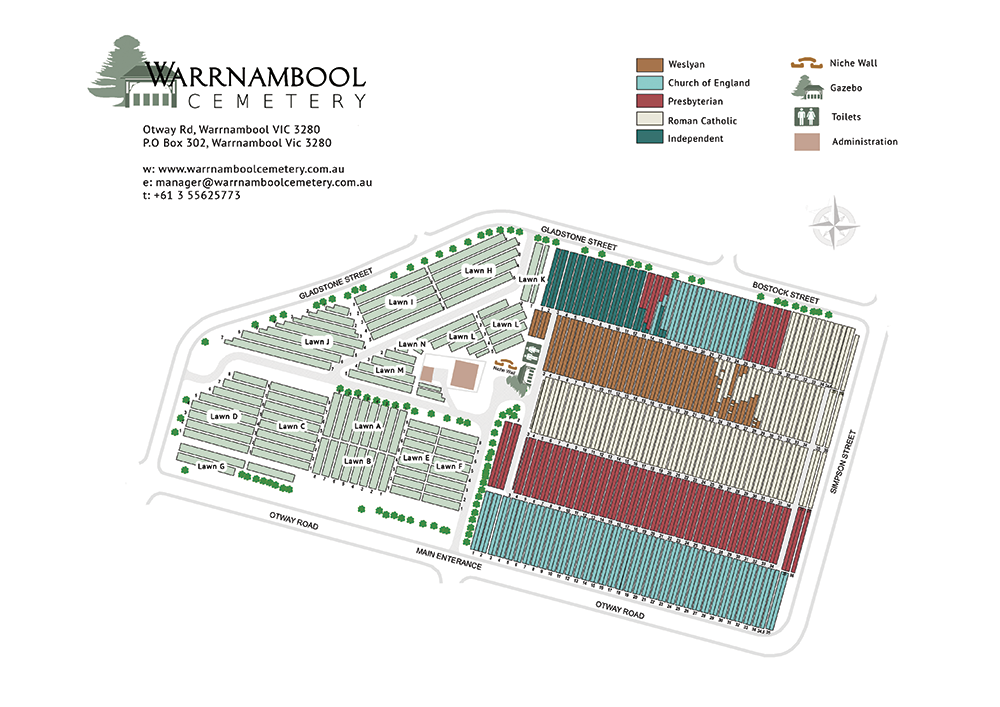
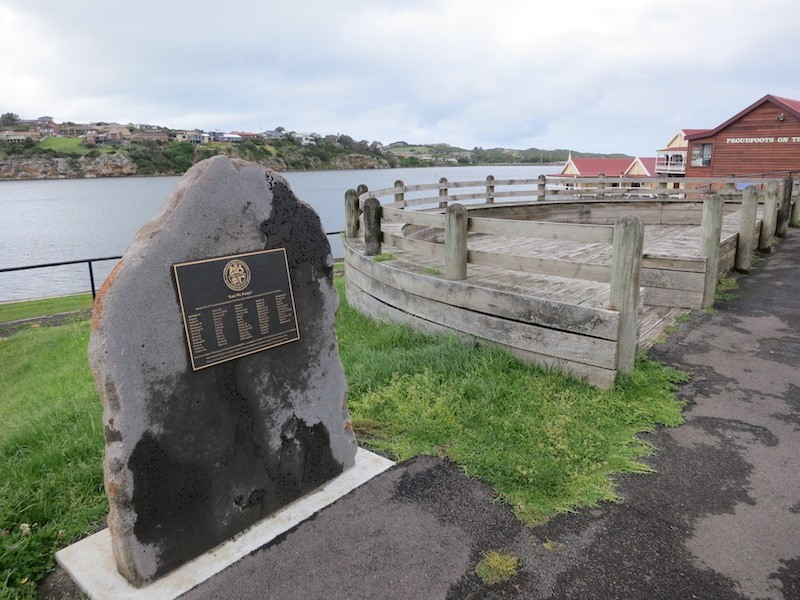

In short, both sides of your grandfather Sid’s ancestors ended up settling around Warrnambool after immigrating from England, Scotland or Ireland about 160 to 170 years ago (1850s & 1860s). Sid frequently visited there as a child, talked about it quite a lot to Anne & me and in 2009 wrote a history. Many of your “younger” ancestors moved to Melbourne and are now buried in the Fawkner Cemetery.
I updated this history and printed it in a book (without photos) last year for Anne and the others. You may have seen it. It’s probably a bit “dry” and takes a bit of time to read. However, a few pages explain Warrnambool. So I attach a full copy of the text so you can find those few pages.
(Your grandmother Mollie’s ancestors also immigrated from the same countries at the same time, but settled in Melbourne and around Beechworth.)
There are a few places where you can see things about your ancestors all in the same part of Warrnambool. There is a 128 year old house, family graves in the cemetery and the rowing club & plaque nearby. I am attaching some photos and a map so you can decide if anything is interesting enough for you, Nick and the kids.
Your great, great grandparents, Alfred and Louisa Brown, built this house in 1892 and moved in with their 7 surviving children. (Another 5 died as infants and young children). There is a photo attached to this email taken in 1897 that shows them and 6 of their children. The smallest child (9 yo) with the dog is your great grandfather Sidney (senior). The house was in paddocks and looked rather large in the 1897 photo. But the photos from 2012 and 2017 show it is now in the suburbs and doesn’t seem as large anymore. We noticed the new owners have added a fence and new garden.
If you visit, you’ll notice how close it is to the Warrnambool-Melbourne railway bridge. Your grandfather Sidney (junior) often used to sit on the front porch and watch all the steam trains racing past. So this is why he became a train “nut”.
If you look at page 37 of the family history I am sending, you will see an explanation.
   Alfred, Louisa and some of their children are buried in a large grave. The details are on page 38 of the family history. On the cemetery map I have written BROWN on the row and the grave photo should make it easy to find.
Their youngest surviving child, your great grandfather Sidney (senior) is not buried here, rather in Fawkner. He married twice with his first wife Marion Ross dying tragically only 7 months after the wedding. She is buried here with her family. The details are on page 41 of the family history. A photo of the grass on the unmarked grave is included and you can see our white car in the car park behind. (William should recognize Maree’s white car)
From another branch of your ancestors, I found the graves of two sets of great, great, great grandparents – Thomas and Ellen Atkinson and William and Emily Toal. Pages 32 & 33 of the history explain and the cemetery map and photos should help.
Families were large in those days and there are numerous graves of the extended families in this cemetery. But as I mentioned, many of your “younger” ancestors moved to Melbourne and are buried in the Fawkner Cemetery.
    Alfred started the rowing club and it still stand with Proudfoots Cafe at the river close to the cemetery. Maree & I had lunch there and there were lots of old historic photos around the walls. Your great grandfather Sidney (senior) and his brothers were rowers there.
Sidney (senior) and his brother John went to France in the First World War. John was killed on the Somme but your great grandfather survived, obviously. Just a few years ago the rowing club installed a commemorative plaque on a rock near the club and it lists their names, Brown J and Brown S. Page 35 of the history has a few details and a photo shows its location.
